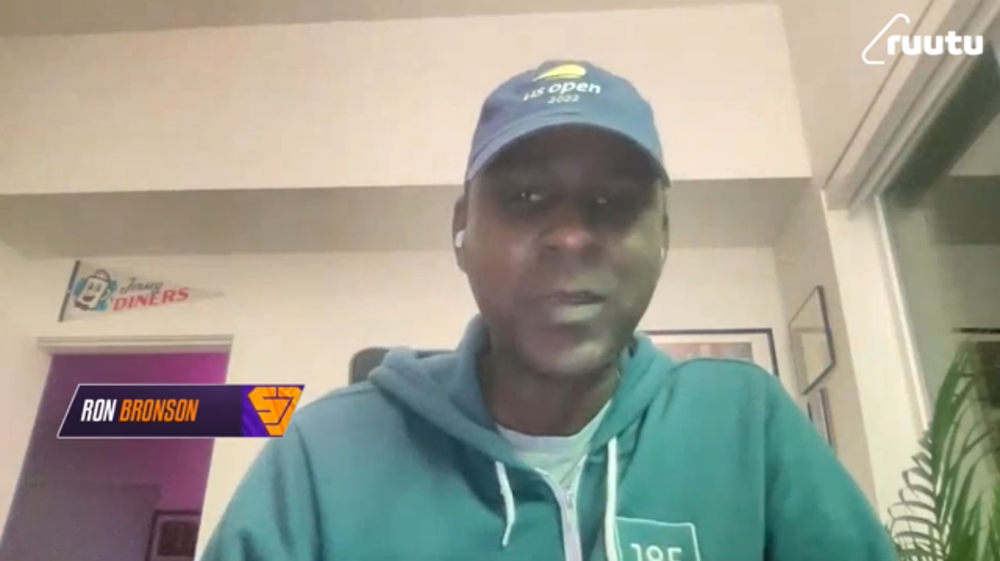
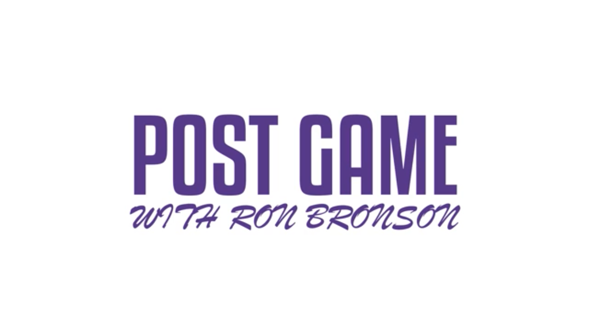

Mallo
The first advanced-analytics site for pesäpallo — Finland’s national baseball variant. The sabermetrics layer the sport never had, and something I’d wanted for as long as I’ve followed it.
Ensimmäinen pesäpallon edistyneen analytiikan sivusto. Sarjaan suhteutetut tunnusluvut, DARKO-tyyliset ennusteet, lajin ensimmäiset julkaistut kenttäkertoimet ja Monte Carlo -pudotuspelitodennäköisyydet — rakennettu virallisen tulospalvelun datasta.

I’ve followed pesäpallo — Finland’s national baseball variant — for well over a decade. Somewhere along the way the fandom turned into something bigger: I’ve talked the sport up on podcasts and other people’s shows; I gave a conference talk on what it taught me about game design; and a couple of years ago I was on the pre- and post-game show for the first-ever English-language Superpesis telecast. I eventually made the pilgrimage to Finland to watch it in person — Superpesis, the top league, wrote about the trip. For an American, I’ve been in this a while. If you want the origin story, I wrote up how a guy from America starts following Finnish baseball.


I’m also a lifelong baseball fan, and I’ve been reading sabermetrics since the ’90s — buying Baseball America and Baseball Weekly off the rack years before any of this went mainstream. Pesäpallo and baseball are cousins, not twins: same instincts, genuinely different sport. I’d always wanted a way to hold both interests in the same hand. Mallo is that bridge — and building the first advanced-stats site for a sport half a world away feels like a strange kind of full circle for someone who fell for the game reading box scores as a kid.
Because here’s the thing: there is no advanced-analytics site for pesäpallo. Anywhere. The sport keeps decades of granular records and has never had a sabermetrics layer built on top of them. So I built one. It borrows openly from the analytics sites I grew up on — DARKO for projections, Baseball Savant for percentile fingerprints, FanGraphs for league-indexed rate stats, Baseball-Reference for career lines and comps — and translates each idea into the grammar of the Finnish game.
It runs on real data. The official results service (pesistulokset.fi) turned out to be a documented JSON API rather than a scraping target — per-player, per-match rows with roughly 82 fields each: hits split by target base, advancement as batter and as runner, turns at bat, defensive position, and match context down to the stadium, weather, temperature, and attendance. Coverage reaches back to the 1940s, with granular stats to 1990. Mallo ingests the current Superpesis season and refreshes on every deploy.
Stats that fit the sport
Finnish media publish counting stats and a handful of percentages. Mallo keeps the traditional line — kunnarit, lyödyt, tuodut, tehot — and adds the two things sabermetrics is really about: honest denominators and league context. Rate stats are computed against the attempts that actually happened, then indexed to the league. TEHO+ is the headline — 100 is league average, era- and division-adjusted in the spirit of OPS+ and wRC+ — with a park-adjusted kTEHO+ alongside it. Every qualified player gets a Baseball-Savant-style percentile fingerprint: diverging red-to-blue bars that read as a skill profile at a glance.
Projections and context
PARE is the projection engine — DARKO’s question transplanted to pesäpallo: how much of a hot streak is real? Every game a player has ever played is weighted by exponential decay, blended toward the league mean with empirical-Bayes shrinkage that leans harder on small samples, with per-stat decay and prior strengths fitted by walk-forward scoring rather than guessed. A short 28-to-33-game season isn’t treated as too noisy to trust — it’s treated as unusually rich in recorded context. So the observed stats stay the headline, adjusted for the conditions they happened in: the first published park factors for the sport (kenttäkertoimet), weather effects, and opponent strength to come.
More than a stat page
- Standings & playoff odds — real Superpesis points, with Monte Carlo playoff odds simulated over the remaining schedule and re-run at weekly cutoffs to draw a season-long odds chart.
- Similarity scores — Baseball-Reference-style comps: nearest neighbors over standardized rate stats, 1000 means identical.
- Pesäpallo → baseball — a rank-preserving quantile map from Superpesis percentiles onto MLB distributions, so a player’s season reads as a shareable English-language line for people who know baseball but not pesäpallo.
- Every league, first-class — men’s and women’s Superpesis and the lower tiers all build their own navigation; the women’s game is never buried behind a filter.
How it’s built
The core is Python over SQLite — a metrics layer, the projection engine, a context model, and a Monte Carlo simulator — with a small web UI on top and charts drawn in vendored D3, no CDN. The demo league generates every stat line from known latent talent so the tests can assert the projections and park factors recover it. It’s a directed agent build, documented in after-action reports in the repo and released under the AGPL. Mostly, though, it’s a fan project: the site I always wanted to exist, finally built.